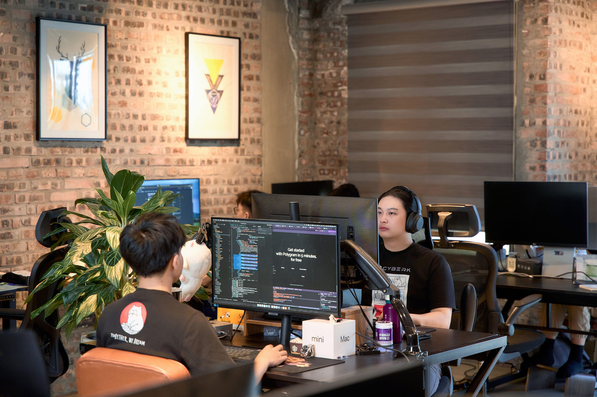

About Cyberk
Fast, Reliable Blockchain Development Service
Discover Cyberk's story — a Web3-focused tech studio built by founders, for founders. We deliver MVPs in under 30 days, helping startups launch blockchain products fast with trust, speed, and excellence.

Our Story
Why Choose Us
Cyberk is a trusted Web3 development partner, delivering speed, reliability, and innovation to help startups always lead the market
Superior Speed
We deliver MVPs in less than 30 days, giving our clients a competitive edge in the fast-moving Web3 world. Speed is our standard — because in blockchain, every day matters.
True Partnership
We're more than a service provider — we act as your co-founder and CTO. Every project is personal to us. We invest passion, expertise, and commitment into your success.
Lifecycle Excellence
We cover the entire product lifecycle — from concept to launch and beyond. That's why clients return with bigger projects, confident we'll deliver world-class blockchain solutions.
Continuous Adaptation
The Web3 world changes fast. We constantly update our blockchain knowledge to stay ahead of new trends, best practices, and technologies — keeping you ahead of the curve too.
Our Vision
Creating BreakthroughsAt Cyberk, our vision is to become the most trusted blockchain development partner for startups and innovators worldwide. We believe that great ideas deserve great execution — and that speed should never come at the cost of quality.
We're building a future where every founder has access to world-class Web3 development, enabling them to bring transformative products to market faster than ever before. Through continuous learning, deep technical expertise, and genuine partnership, we aim to drive real breakthroughs in the blockchain ecosystem.

Our Core Values
The principles that guide every decision we make and every product we build
Curiosity
We never stop asking questions. Curiosity drives us to explore new technologies, challenge assumptions, and find better solutions for every project we take on.
Courage
We take bold action and make tough calls. Whether it's advising a client against a flawed approach or adopting cutting-edge technology, we lead with conviction.
Integrity
We do what we say and say what we mean. Transparency and honesty are at the core of how we work — with our clients, our team, and our community.
Dedication
Every project we deliver is personal. We treat our clients' goals as our own and commit fully to delivering results that exceed expectations.
Craftsmanship
We take pride in the quality of our work. From clean code to thoughtful architecture, every detail matters — because great products are built on great craftsmanship.